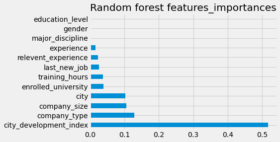

Netflix Recommendation Model
Tags- Data Cleaning,Data Analysis,Machine Learning,Content Based Recommendation , TF-IDF Vectorization , Sigmoid Kernal, Cosine Simlarities
Using the dataset of Netflix Movies and TV/ shows listings found on kaggle I have made a content based recommendation engine that will output giving 10 recommendations to a user based on what they have searched, I have used the TF-IDF vectorization technique on this dataset twice first with just sigmoid kernel and then by considering the cosine similarity. Also , I have made an extra feature in the dataset by combining just the features that seems important while cosnidering the preferences for some viewer like the description , cast and directors so that the vectorization would cover all the possible aspect of preferences for someone to give the recommmendations.
Results - Comparing the recommendations of both the models it was evident that the engine works well with the cosine similarites (linear kernel) , better recommdations were provided using this , further I would like to work on a collabrative recommendation model considering the insights I have gained with this one.

Hr-Analaytics Prediction
Tags- Data Cleaning,Data Analysis,Machine Learning,Prediction Analaysis,Visual Results,MICE,ROC Curve, Random Forest, Desicion Tree
The aim of this project is to predict the employee which is most likely to leave their job next month depending on various factors as provided in the dataset , where 1 as a class denotes yes the person will resign and 0 denotes that no there's is no chance of the person resigning next month. Various factors are considered important and affecting the desicion as determined by the correlation function matrix we have used. Also the dataset was found to have number of missing values and therefore we have considered using the MICE technique to fill up the spaces so that no important information might loose from our hands.
Results - Finally a csv file containing the prediction target and id of the employee is generated using a random forest model giving an accuracy of 83% on the training data and 79% on the test , giving an acceptable fit to finalize.
Titanic Survivors Prediction-
Tags- Data Cleaning,Data Analysis,Machine Learning,Prediction Analaysis,Visual Results,K-nearest Neighbours,Random Forest,Feature Engineering
The predictions are done by first cleaning the training model from redundancies , clustering the data according to their nature to extract the most information about the individual passenger alone as an entity , Feature scaling is performed to set the range and simultaneously visualizing the result. After preparing the model various machine learning algorithms are test to predict the result and the one with the best accuracy score is chosen.
Results - It is clear that Females within the age group of 25-45 are most likely to survive the calamity as compared to males .Also it should be noted that people travelling alone or with not more than 3 family members are the one having higher chances to survive as compared to other groups of families.
The accuracy of this prediction is 0.77.. being the first version of itself . More favourable changes within the analysis are to be done to increse the points

Video Games Sales analysis
Tags- Predictive Model,Clustering,Data Analysis,Data Cleaning,Data Visualization,Regression,Cost Estimation Model,Analytics
This report is centralized to diffrentiate the trends in Video Games sales market wise according to their genre, Platform and the brand producing it. Examinig the report market wise and overall at the global rate to predict if a particular production is going through loss or exapnding its business over time.
Results - Visualizing the sales records at different market levels , It is clear that Action and Adventure are the trending genres overall , whereas fantasy is the one always giving them a strong competition. There is also a noticeable period of regression when the overall market of games is very low around the early 2000s.